Instituciones
Obras, instituciones y centros de formación de la Iglesia.
«Por sus frutos los conoceréis» (Mateo 7,20). Estas son las instituciones que trabajan como brazos extendidos de nuestra Iglesia, bajo la guía del Santo Sínodo Mundial.
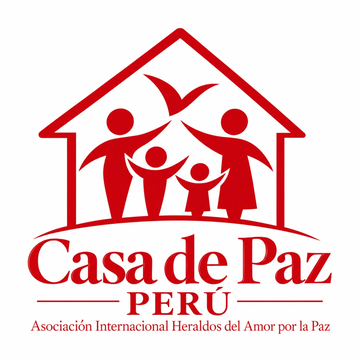
Casa de Paz Perú
Obra comunitaria, educativa y pastoral: atención integral a familias vulnerables, adultos mayores y niñez en riesgo, a través de albergues y comedores.
Entérate más en Facebook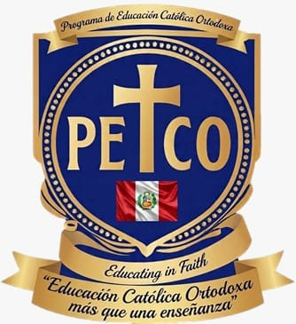
Programa de Educación Católica Ortodoxa (PECO)
Programa educativo de la Iglesia para la formación en la fe católica ortodoxa.
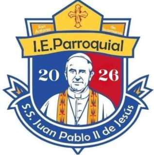
Colegios Parroquiales
Educación en valores y formación integral desde la infancia, sembrando futuro niño por niño.
Entérate más en Facebook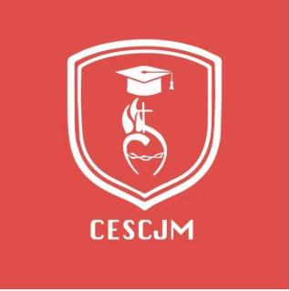
Corporación Educativa Sagrado Corazón de Jesús y María
Capacitación técnica y formación profesional: educación para el trabajo y la dignidad.
Entérate más en Facebook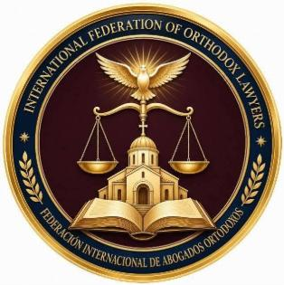
Federación Internacional de Abogados Ortodoxos
Con base de abogados en Lima e integrantes de otros países, brinda asesoría legal gratuita y defensa de los derechos humanos.
Entérate más en Facebook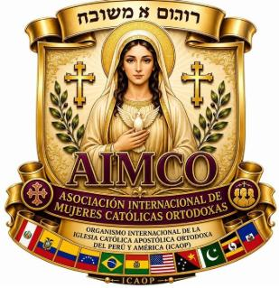
Asociación Internacional de Mujeres Católicas Ortodoxas
Liderazgo femenino, educación teológica, empoderamiento y servicio a la comunidad.
Entérate más en FacebookAsociación Internacional Heraldo del Amor por la Paz
Promoción de valores éticos, cultura de paz y diálogo interreligioso; distinciones de honor por la paz en el Perú.
Entérate más en Facebook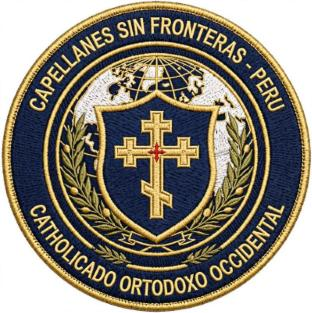
Alianza Internacional Capellanes sin Fronteras
Capellanes que brindan acompañamiento pastoral y espiritual en todo lugar del mundo.
Entérate más en Facebook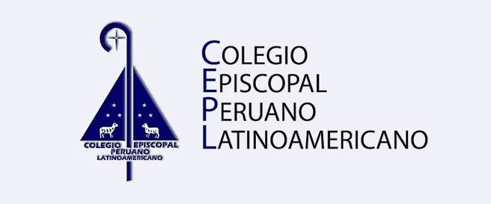
Colegio Episcopal Peruano/Latinoamericano (CEPPL)
Espacio de comunión y coordinación de los obispos del Perú y Latinoamérica.
Entérate más en Facebook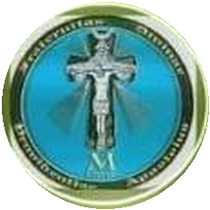
Fraternidad Misionera de la Divina Providencia
Evangelización y humanización de los pueblos. «Amar es servir, servir es amar».
Entérate más en Facebook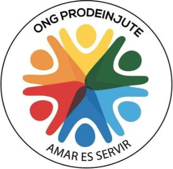
PRODEINJUTE
Desarrollo integral de la niñez y la juventud: formación, prevención y oportunidades.
Entérate más en Facebook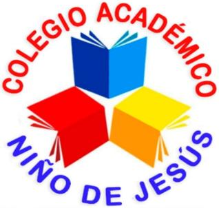
Colegio Académico Niño de Jesús
Educación inicial, primaria y secundaria, además de academia preuniversitaria.
Entérate más en Facebook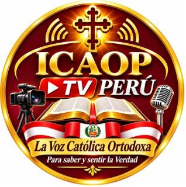
ICAOP TV Perú
Canal digital de la Iglesia: «La Voz Católica Ortodoxa, para saber y sentir la Verdad».
Entérate más en Facebook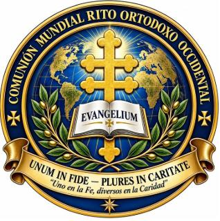
Comunión Mundial de Jurisdicciones de Rito Ortodoxo Occidental
«Unum in fide, plures in caritate»: uno en la fe, diversos en la caridad.
Entérate más en FacebookFormación eclesiástica
Como parte del desarrollo de su misión, la ICAOP creó tres instituciones de estudio para cuidar la formación de clérigos y fieles en la recta doctrina.
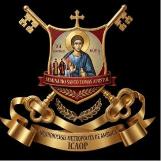
Seminario Internacional «Santo Tomás Apóstol»
Formación de los candidatos al sacerdocio. Fundado como Seminario «San Andrés Apóstol», hoy lleva el nombre del Apóstol de las Indias.
Entérate más en FacebookInstituto Eclesiástico de Filosofía y Teología «Santo Tomás Apóstol»
Estudios de filosofía y teología para el clero y los fieles que desean profundizar en la fe.
Escuela de Especialización Teológica y Ciencias Religiosas «San Pedro Apóstol»
Especialización teológica y en ciencias religiosas, conforme a la tradición de los Santos Padres.
Si deseas información sobre estudios o vocación sacerdotal, escríbenos desde Contacto.